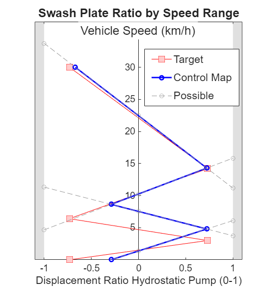

Optimizing Power-Split CVT Design Parameters

This example shows how to use optimization capabilities in MATLAB to identify design parameters that will create a power-split CVT that has the desired speed ranges.
- To see the structure of the power-split CVT, see Power Split CVT with Four Speed Ranges
- To explore this workflow in an App, try Power Split CVT Design App
- To see the code that calculates the control table, see cvtCalcSwashControl.m.
Return to main example Wheel Loader Design with Simscape™
Copyright 2021-2024 The MathWorks, Inc
Contents
Define CVT Parameters and Design Criteria
Below are parameters that are:
- Fixed for the design.
- Adjustable for the design (initial values for tuning)
- Represent the design criteria
% Fixed for the design wEng = 2200; % Nominal RPM wPumpNom = 3350; % Pump nominal speed nHSPumpMotor = 1.2941; % Ratio (Hydrostatic Pump Displacement/ % Hydrostatic Motor Displacement) pumpVolEff = 0.97; % Hydrostatic pump volumetric efficiency nGearCVTOut = 1.7647; % CVT output transfer gear ratio nTRing = 99; % Number of teeth on planetary ring gears (all) nDiff = 2.8000; % Ratio of differential nFinalDrive = 4.625; % Ratio of wheel hub planetary gear rWhl = 0.3937; % Wheel radius % Adjustable for the design nGearHSOut = 1.425; % Gear ratio at output of hydrostatic transmission nTSuns = [39,49,50,50]; % Vector 1x4 number of teeth on sun gear for each planetary % Design Criteria tgtMaxSwash = 0.7317; % Target max displacement ratio of pump swash plate (0-1) tgtVSpdRanges = [0 3 6.4 14.2 30]; % Speed ranges in km/h % Derived parameter vWhl2CVTOut = 1/(3.6*rWhl*pi/30)*nGearCVTOut*nDiff*nFinalDrive;
Determine CVT Control with Initial Values
The parameters above dictate at which speed and at which pump displacement ratio the gear shift changes must take place. We use function cvtCalcSwashControl.m to calculate the shift speeds and pump displacement ratio at those speeds.
In the plot below the desired design is shown in red. The desired shift speeds are along the vertical axis, the pump displacement ratio is along the x axis. The center of each target speed range is where the pump displacement ratio is 0, which is the maximum efficiency point of the CVT.
The result of this design is shown in blue. The shift points (ends of the speed range) must occur when the output speed of the planetary gear combinations are identical. Those points are where the gray lines cross. The settings for the gear ratios place those transition points at speeds that are not near the targets. Our design meets the targets when the blue line overlays the red line.
% Plot with initial CVT values [~, ~, ax_sw] = cvtCalcSwashControl(... tgtVSpdRanges,rWhl,nGearCVTOut,nDiff,nFinalDrive,wEng,wPumpNom,... nHSPumpMotor,tgtMaxSwash,nTRing,nTSuns,nGearHSOut,pumpVolEff,'plot');
Use Optimization Algorithms to Tune the Design Parameters
We will use optimization algorithms to tune the gear ratios to obtain the speed ranges we want. The CVT output ratio and the number of teeth on the four planetary sun gears are the design parameters to be adjusted. Note that the number of teeth on the sun gears must be an integer and must be divisible by 3 so that they can mate properly with 3 evenly spaced planetary gears.
The code below:
- Assembles the parameters to be tuned into a vector
- Defines limits for the parameter values
- Defines which parameters are integers
- Assembles the call to the objective function
- Calls ga() to optimize the design using a genetic algorithm.
- Scales the result for the sun gear teeth number by 3 (they were divided by 3 in the objective function).
% Initial values xInit = [nGearHSOut nTSuns]; % Define limits for parameter values lb = [0.1,4,4,4,4]; % Lower bound ub = [5,28,28,28,28]; % Upper bound % Define which parameters are integers (number of sun gear teeth) intcon = [2,3,4,5]; % Assemble objective function handle objFcnHdl = @(x)cvtObjFunGearRatios4SpdsSwash(x, tgtVSpdRanges, ... nHSPumpMotor,wEng,wPumpNom, vWhl2CVTOut, nTRing,tgtMaxSwash); % Alternate option: surrogateopt %options = optimoptions('surrogateopt','PlotFcn','surrogateoptplot',... % 'MaxFunctionEvaluations',500); %[xOpt,fval,exitflag,output] = surrogateopt(objFcnHdl,lb,ub,intcon,options); % Use a predefined seed for the random number generator. % Only used to ensure documentation stays consistent. load('gaOptStreamState.mat','streamState'); stream = RandStream.getGlobalStream; stream.State = streamState; % Call Genetic Algorithm [xOpt,fval,exitflag,output] = ga(objFcnHdl,size(lb,2),[],[],[],[],lb,ub,[],intcon); clear streamState % Alternate options %xOpt = fmincon(objFcnHdl,xInit,[],[],[],[],lb,ub); %xOpt = patternsearch(objFcnHdl,xInit,[],[],[],[],lb,ub); % Take optimized value and ensure integer number of teeth % that mate with 3 planetary gears xFinal = [xOpt(1) 3*xOpt(2:5)];
ga stopped because the average change in the penalty function value is less than options.FunctionTolerance and the constraint violation is less than options.ConstraintTolerance.
Plot Optimized Result
The result of the optimization process identifies gear ratios that deliver the desired design. The speed range limits are at their targets and the center of the speed range is at the point where the CVT has maximum efficiency.
% Plot with current results and calculate swash control table [swashCtrlIdeal, swashCtrlTable, aw_sw] = cvtCalcSwashControl(... tgtVSpdRanges,rWhl,nGearCVTOut,nDiff,nFinalDrive,wEng,wPumpNom,... nHSPumpMotor,tgtMaxSwash,nTRing,xFinal(2:5),xFinal(1),pumpVolEff,'plot'); T = table(xInit',xFinal','VariableNames',{'Initial','Final'},... 'RowNames',{'CVT Output Ratio','nTeeth Sun 1','nTeeth Sun 2','nTeeth Sun 3','nTeeth Sun 4'}); disp(T)
Initial Final
_______ ______
CVT Output Ratio 1.425 1.4614
nTeeth Sun 1 39 39
nTeeth Sun 2 49 51
nTeeth Sun 3 50 27
nTeeth Sun 4 50 27
close all